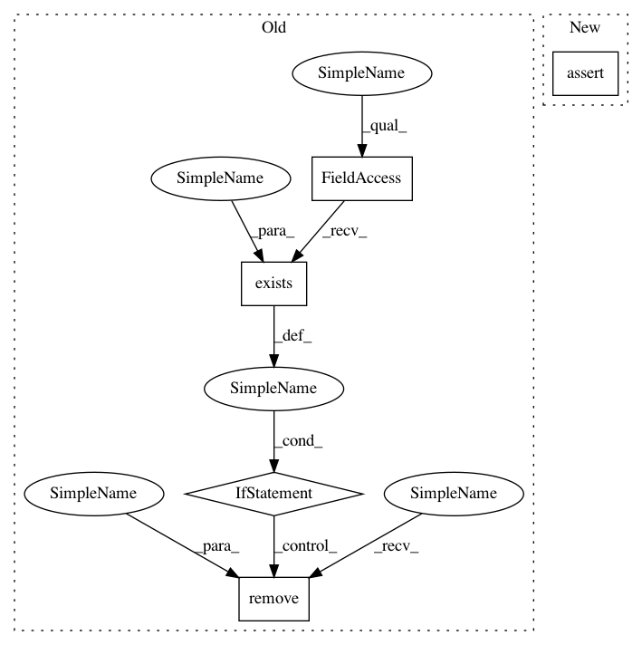

72070a417b2e7bf9ac36ab157d93edb05b9eebe7,arviz/tests/test_data.py,TestIONetCDFUtils,test_io_method,#TestIONetCDFUtils#Any#Any#,371
Before Change
if os.path.exists(filepath):
os.remove(filepath)
// InferenceData method
if os.path.exists(filepath):
os.remove(filepath)
inference_data.to_netcdf(filepath)
assert os.path.exists(filepath)
assert os.path.getsize(filepath) > 0
inference_data2 = InferenceData.from_netcdf(filepath)
After Change
here = os.path.dirname(os.path.abspath(__file__))
data_directory = os.path.join(here, "saved_models")
filepath = os.path.join(data_directory, "io_method_testfile.nc")
assert not os.path.exists(filepath)
// InferenceData method
inference_data.to_netcdf(filepath)
assert os.path.exists(filepath)
assert os.path.getsize(filepath) > 0
In pattern: SUPERPATTERN
Frequency: 3
Non-data size: 5
Instances
Project Name: arviz-devs/arviz
Commit Name: 72070a417b2e7bf9ac36ab157d93edb05b9eebe7
Time: 2019-01-11
Author: ahartikainen@users.noreply.github.com
File Name: arviz/tests/test_data.py
Class Name: TestIONetCDFUtils
Method Name: test_io_method
Project Name: facebookresearch/ParlAI
Commit Name: d082514cff28f46eae936872ee6c311db5843a37
Time: 2018-06-13
Author: jju@fb.com
File Name: parlai/mturk/core/mturk_manager.py
Class Name: MTurkManager
Method Name: _log_working_time
Project Name: facebookresearch/ParlAI
Commit Name: d082514cff28f46eae936872ee6c311db5843a37
Time: 2018-06-13
Author: jju@fb.com
File Name: parlai/mturk/core/mturk_manager.py
Class Name: MTurkManager
Method Name: _reset_time_logs